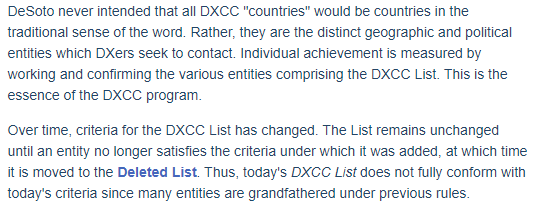

From the ARRL DXCC Rules:  “They are the distinct geographic and political entities which DXers seek to contact”. Who in this World seeks to contact Bouvet??? Except because it’s on the list? Same with the uninhabited islands? Sorry, I’m a new Ham. I feel for those who waited 60 years to get China (at least China has a few people) but do we want to punish the future generations of Hams with these ridiculous arbitrary and historical rules? The future does not bode well for the Hobby based on demographics. Lets attract more attention not dissuade new generations from participating in an activity for which they have almost no chance to achieve success. My two cents.
K6KM From: Rick NK7I via Chat I agree with Paul. We have enough 'lowering of the bar' these days and to do operations 'next to' (how far?) would take away from those who have attained the ranks in #1 Honor Roll. DXCC is not about showing up (participation awards); it's about accomplishing something. That something, is very specific. The operations take place ON that location; a DXpedition has feet, antennas and transceiver (and wheels, boats, copter landing zone) ON the stated location; close just doesn't count (except horseshoes, hand grenades and nuclear weapons). A RIB seems a viable compromise since the team must land the craft, set up the station, then leave so the environment remains (almost) pristine (simpler for controlling agencies to tolerate). Human time on 'protected sites' would be less than a typical scientific study, mere hours. Operation of the RIB from the boat (or beyond if an internet dish is on the RIB) protects the environment, while the transceiver is on/at the stated location (else it's /mm and worthless for DXCC other than grids). Bouvet would have been a prime example (with the right boat for landing, a significant challenge, not to mention anchoring from the tidal surges). If a RIB is lost, that's sad but if a member of the team is lost, that's a disaster. If piracy or a government reaction happens (the contested south China sea zone), leave the RIB and boogie off to safety. A RIB might lower some of the DXpedition costs since less would be transported and the staffing needs are lower (more remote ops, less shuttling meals and supplies, fewer bunks required onboard). With costs being so extreme, it matters. Team comfort would be higher which makes it easier to get folks to join the team (a warm bed and hot meals, not shivering on a barren rock in a tent). It's the same reason that platforms were built ON unlivable rocks that during any storm, would be under water (Scarborough? I forget now), not merely anchored in nearby (FAR safer) waters. Those ops were THERE and that is a not so subtle difference. Being nearby, isn't the same. There is no absolute way to know where the boat/landing truly is since man is also inventive enough to work around such limitations as mere technology. Not via tech or pictures, one barren rock or reef or atoll looks a lot like any other to most. Even for those landing, how do you KNOW you're on the correct remote flea spot in the middle of an ocean? You trust the technology (even sextant, compass and charts). What you are left with is an honor code and some faith in the team. A few have had monumental disastrous failures (unlicensed operations from a boat dock moored in a slip adjacent to land comes to mind) and live in infamy, never again trusted. Since it was grazed on in this discussion, I repeat my premise that the only valid DXCC 'entities' that should be counted are only places where human life is present or possible (which deletes Bouvet unless it becomes a research facility and most reefs and atolls) and only include those governments that potentially will (ever) allow ham radio (unlikely in the DPRK in our lifetime). Even more so with each governmental agency in charge routinely says NO to any request, because it's simpler than trying to find ways to make a trip compatible for any other need than their myopic viewpoint. (I include satellite operations via geosynchronous birds because it excludes a large part of the world. It should not count.) We each (of an age) have slots that are now in the 'deleted' column so it really takes nothing away if a few more spots migrate into that column; that shows an active life of the DXCC award system, it adapts to reality (albeit at glacial pace). Yes, while I have Afghanistan confirmed, it should be moved to the deleted column, as one example (not again, in the foreseeable future). Let's not dumb down DXCC; let's not minimize the efforts of those who have worked everything so others can 'feel good' and struggle less. Let's have valid and high real bars to reach. DXpeditions BEING there and doing successful operations is THE point. Being nearby is a participation award. 73, On 6/4/2023 12:29 PM, Steve Jones via Chat wrote:
http://mail.ncdxc.org/mailman/listinfo/chat_ncdxc.org |